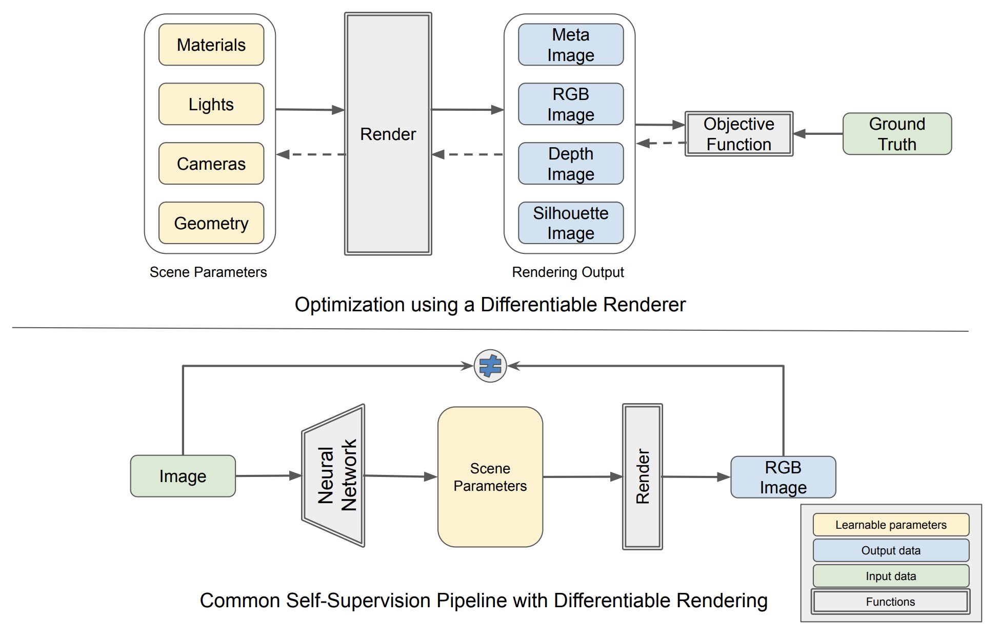
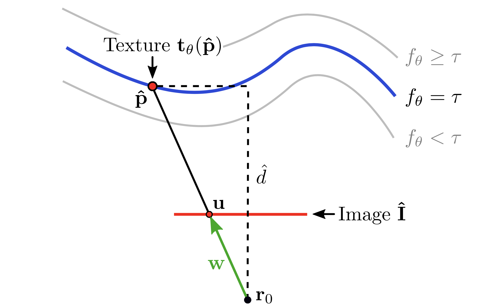
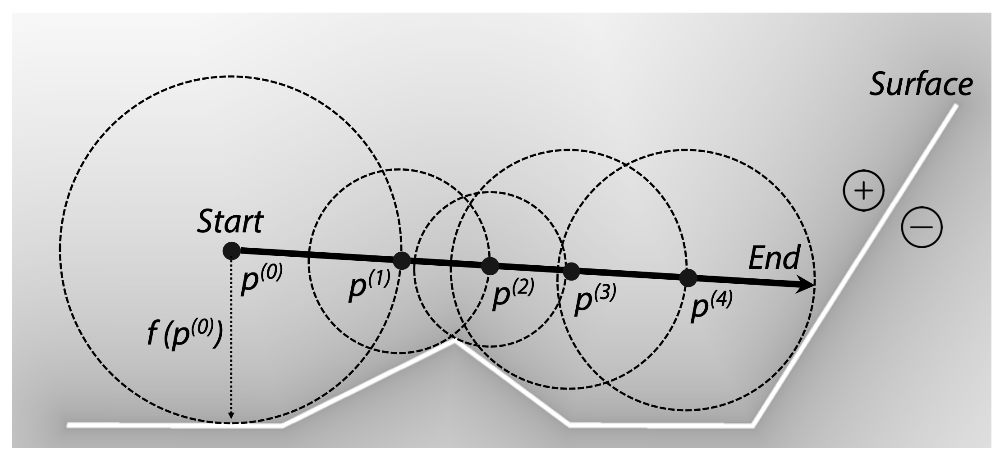
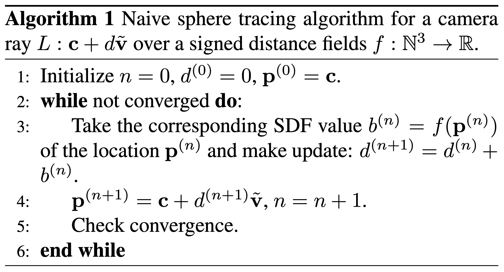
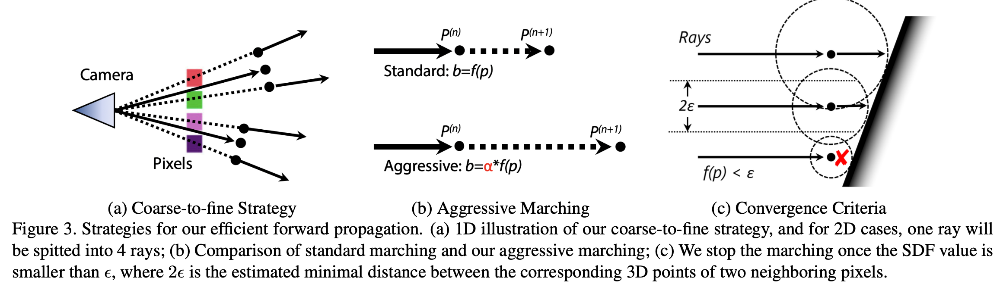
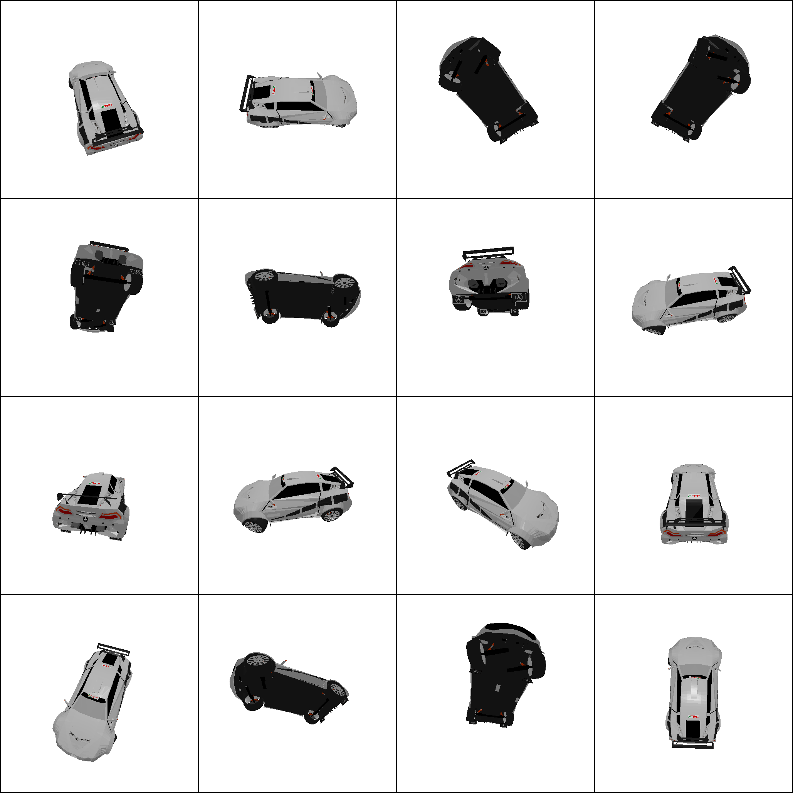
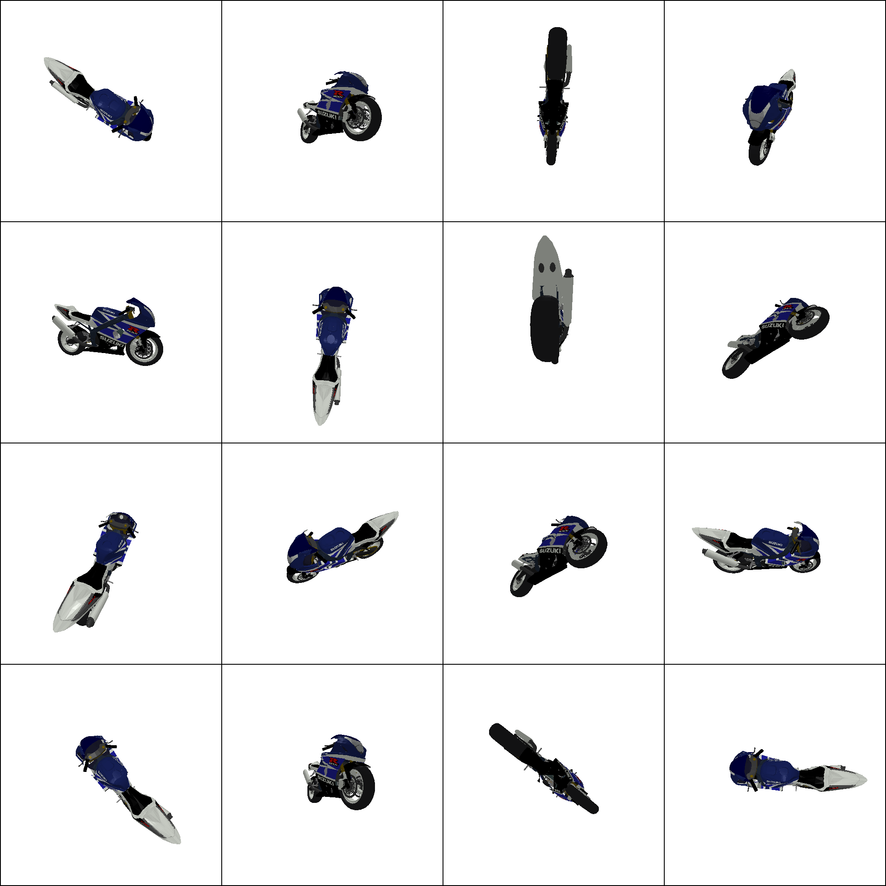
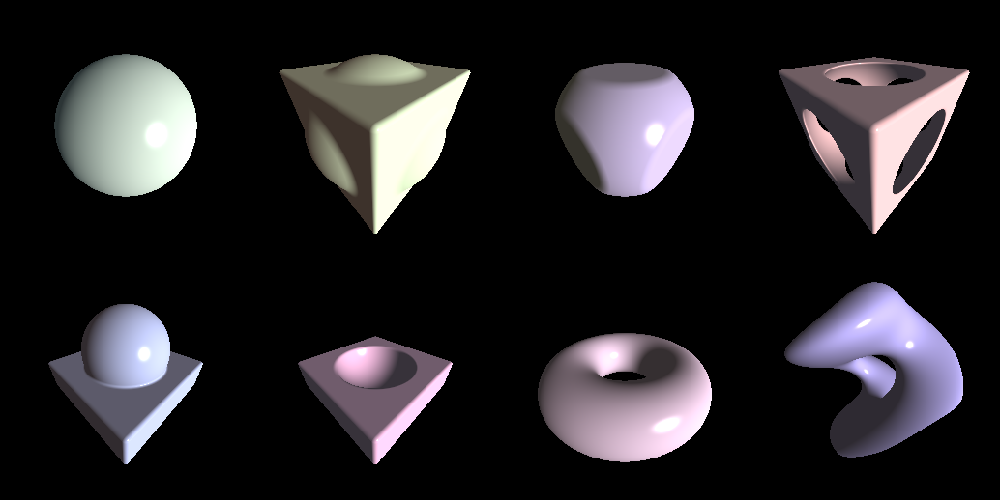

<!DOCTYPE html>
<html lang="ja" >
<head>
    <meta charset="utf-8" />
    <meta http-equiv="X-UA-Compatible" content="IE=edge,chrome=1" />
    <meta name="viewport" content="width=device-width, initial-scale=1" />
    <meta name="author" content="Hiroki Sakuma" />
	
	
	
	<title>Differentiable Sphere Tracing ｜ </title>
	
    
    
    <meta name="description" content="CVPR&#39;20の論文を眺めていたら，最近ハマっているGLSLと関連する面白そうな論文を見つけた． Differentiable Volumetric Rendering: Learning Implicit 3D Representations without 3D Supervision [Niemeyer et al., CVPR&#39;20] DIST: Rendering Deep Implicit Signed Distance Function with Differentiable Sphere Tracing [Liu et al., CVPR&#39;20] SDFDiff: Differentiable Rendering of Signed Distance Fields for 3D Shape Optimization [Jiang et al., CVPR&#39;20] ここ最近のCVP" />
    

    
    
    <meta name="keywords" content="Max/MSP, GLSL, Cinder, PyTorch" />
    

	
    
    <link rel="shortcut icon" href="https://hirokisakuma.com/images/favicon.ico" />

    <link rel="stylesheet" type="text/css" media="screen" href="https://hirokisakuma.com/css/normalize.css" />
    <link rel="stylesheet" type="text/css" media="screen" href="https://cdn.jsdelivr.net/npm/animate.css@4.1.0/animate.min.css" />
    <link rel="stylesheet" type="text/css" media="screen" href="https://hirokisakuma.com/css/zozo.css" />
	<link rel="stylesheet" type="text/css" media="screen" href="https://cdn.jsdelivr.net/npm/remixicon@2.5.0/fonts/remixicon.css" />
    <link rel="stylesheet" type="text/css" media="screen" href="https://hirokisakuma.com/css/highlight.css" />

    
    
</head>

<body>
    <div class="main animate__animated animate__fadeInDown">
        <div class="nav_container animated fadeInDown">
    <div class="site_nav" id="site_nav">
        <ul>
            
            <li>
                <a href="/">Home</a>
            </li>
            
            <li>
                <a href="/posts/">Archive</a>
            </li>
            
            <li>
                <a href="/tags/">Tags</a>
            </li>
            
            <li>
                <a href="/about/">About</a>
            </li>
            
        </ul>
    </div>
    <div class="menu_icon">
        <a id="menu_icon"><i class="ri-menu-line"></i></a>
    </div>
</div>
        <div class="header animated fadeInDown">
    <div class="site_title_container">
        <div class="site_title">
            <h1>
                <a href="https://hirokisakuma.com/">
                    <span></span>
                </a>
            </h1>
        </div>
        <div class="description">
            <p class="sub_title">Hiroki Sakuma</p>
            <div class="my_socials">
                
                
                
                
                <a href="https://github.com/skmhrk1209" title="github" target="_blank"><i class="ri-github-fill"></i></a>
                
                
                
                
                
                
                
                
                <a href="https://hirokisakuma.com/index.xml" type="application/rss+xml" title="rss" target="_blank"><i
                        class="ri-rss-fill"></i></a>
            </div>
        </div>
    </div>
</div>
        <div class="content">
            <div class="post_page">
                <div class="post animate__animated animate__fadeInDown">
                    <div class="post_title post_detail_title">
                        <h2><a href='/posts/differentiable-sphere-tracing/'>Differentiable Sphere Tracing</a></h2>
                        <span class="date">2020.10.09</span>
                    </div>
                    <div class="post_content markdown"><p>CVPR'20の論文を眺めていたら，最近ハマっているGLSLと関連する面白そうな論文を見つけた．</p>
<ol>
<li><a href="https://openaccess.thecvf.com/content_CVPR_2020/papers/Niemeyer_Differentiable_Volumetric_Rendering_Learning_Implicit_3D_Representations_Without_3D_Supervision_CVPR_2020_paper.pdf">Differentiable Volumetric Rendering: Learning Implicit 3D Representations without 3D Supervision [Niemeyer et al., CVPR'20]</a></li>
<li><a href="https://openaccess.thecvf.com/content_CVPR_2020/papers/Liu_DIST_Rendering_Deep_Implicit_Signed_Distance_Function_With_Differentiable_Sphere_CVPR_2020_paper.pdf">DIST: Rendering Deep Implicit Signed Distance Function with Differentiable Sphere Tracing [Liu et al., CVPR'20]</a></li>
<li><a href="https://openaccess.thecvf.com/content_CVPR_2020/papers/Jiang_SDFDiff_Differentiable_Rendering_of_Signed_Distance_Fields_for_3D_Shape_CVPR_2020_paper.pdf">SDFDiff: Differentiable Rendering of Signed Distance Fields for 3D Shape Optimization [Jiang et al., CVPR'20]</a></li>
</ol>
<p>ここ最近のCVPRなどのコンピュータビジョンの学会では3Dの研究が爆発的に増えていて，ビジョンとグラフィクスを行ったり来たりしている研究も多い気がする．特に3D形状をどう表現するかという問題に焦点が当たっており，ボクセルやポイントクラウド，メッシュなどの離散表現ではなく，DNNでSigned Distance Function (SDF)をモデル化 <a href="https://openaccess.thecvf.com/content_CVPR_2019/papers/Park_DeepSDF_Learning_Continuous_Signed_Distance_Functions_for_Shape_Representation_CVPR_2019_paper.pdf">[Park et al., CVPR'19]</a> したり，Occupancy Functionという物体の内部か外部かを判別する2値分類器などをモデル化 <a href="https://openaccess.thecvf.com/content_CVPR_2019/papers/Mescheder_Occupancy_Networks_Learning_3D_Reconstruction_in_Function_Space_CVPR_2019_paper.pdf">[Mescheder et al., CVPR'19]</a> したりして，3D形状を陰関数表現しているのをよく見かける．</p>
<p>またこれとは別にDifferentiable Rendering <a href="https://openaccess.thecvf.com/content_cvpr_2018/papers/Kato_Neural_3D_Mesh_CVPR_2018_paper.pdf">[Kato et al., CVPR'18]</a> という手法がある．これはレンダリングプロセスを微分可能にし，計算グラフに組み込むことで，3D教師データを必要とせず，2D教師データのみで3D形状の学習を行うことができるでものである．言い換えれば，どのような3D形状を学習すれば，それによってレンダリングされた結果が教師である2Dデータと一致するか，ということを学習する．例えばラスタライズベースのレンダリングプロセスの大部分は幾何計算であり微分可能であるが，ラスタライズだけは微分できない．そこで様々な近似勾配が提案されている．</p>
<br>
<div align="center">

<p><span>Differentiable Rendering: A Survey [Kato et al., 2020]</span></p>
</div>
<br>
<p>今回の3つの論文は全て，DNNで陰関数表現された3Dオブジェクトのレンダリングを微分可能な形でどう計算グラフに組み込むか，という問題を扱っている．陰関数表現された3Dオブジェクトのレンダリングはまさしくレイキャスティングである．レイキャスティングを微分可能な形で計算グラフに組み込めれば，レンダリングを通してDNNを最適化できる．</p>
<p>今回の目標は，まずこれらの論文を理解し，実装し，学習させる．次に学習されたネットワークをSigned Distance FunctionとしてGLSLにぶちこみそのままスフィアトレーシングでレンダリングしてやる．これで学習された3D形状をそのままレンダリングできるはずである．</p>
<p>まず今回の問題設定を定式化する．DVR [1] の手法が最も洗練されている気がしたこれをベースに理解を進めることにした．
まず3Dオブジェクトの形状は$$f_{\theta}: \mathbb{R}^{3} \times \mathcal{Z} \rightarrow \mathbb{R}$$で陰関数表現する．これはSigned Distance FunctionでもOccupancy Functionでも良い．
3Dオブジェクトのテクスチャは$$t_{\theta}: \mathbb{R}^{3} \times \mathcal{Z} \rightarrow \mathbb{R}^{3}$$で表現する．共に$z \in \mathcal{Z}$は3Dオブジェクトの形状，テクスチャを表す埋め込み表現であり，2D表現からDNNで獲得する．</p>
<p>よってレンダリングされた2D表現を$\hat{I}$とすると，以下のような最適化問題を解きたいわけである．
$$\theta^{*}=\text{argmin}_{\theta}\mathcal{L}(\hat{I}, I)$$</p>
<p>勾配法で最適化するとして
$$\cfrac{\partial{\mathcal{L}}}{\partial{\theta}}=\sum_{u}\cfrac{\partial{\mathcal{L}}}{\partial{\hat{I}_{u}}}\cfrac{\partial{\hat{I}_{u}}}{\partial{\theta}}$$</p>
<br>
<div align="center">

<p><span>DVR [Niemeyer et al., CVPR'20]</span></p>
</div>
<br>
<p>ここで$f_{\theta}$を用いてレイキャスティングした結果の交点を$\hat{p}$とすると，$\hat{I}_{u}=t_{\theta}(\hat{p})$であるから，
$$\cfrac{\partial{\hat{I}_{u}}}{\partial{\theta}}=\cfrac{\partial{t_{\theta}(\hat{p})}}{\partial{\theta}}+\cfrac{\partial{t_{\theta}(\hat{p})}}{\partial{\hat{p}}}\cdot\cfrac{\partial{\hat{p}}}{\partial{\theta}}$$</p>
<p>ここで$\cfrac{\partial{\hat{p}}}{\partial{\theta}}$は陽には計算できないが，$f_{\theta}(\hat{p})=0$の陰関数微分により，
$$\cfrac{\partial{f_{\theta}(\hat{p})}}{\partial{\theta}}+\cfrac{\partial{f_{\theta}(\hat{p})}}{\partial{\hat{p}}}\cdot\cfrac{\partial{\hat{p}}}{\partial{\theta}}=0$$</p>
<p>ここでレイを$r(d)=r_{0}+dw$と表すと，$\hat{p}=r(\hat{d})$と表せ，</p>
<p>$$\cfrac{\partial{\hat{p}}}{\partial{\theta}}=\cfrac{\partial{\hat{d}}}{\partial{\theta}}w$$</p>
<p>よって，
$$\cfrac{\partial{f_{\theta}(\hat{p})}}{\partial{\theta}}+\cfrac{\partial{f_{\theta}(\hat{p})}}{\partial{\hat{p}}}\cdot\cfrac{\partial{\hat{d}}}{\partial{\theta}}w=0$$</p>
<p>$$\cfrac{\partial{\hat{d}}}{\partial{\theta}}=-(\cfrac{\partial{f_{\theta}(\hat{p})}}{\partial{\hat{p}}} \cdot w)^{-1}\cfrac{\partial{f_{\theta}(\hat{p})}}{\partial{\theta}}$$</p>
<p>すなわち，
$$\cfrac{\partial{\hat{p}}}{\partial{\theta}}=-(\cfrac{\partial{f_{\theta}(\hat{p})}}{\partial{\hat{p}}} \cdot w)^{-1}\cfrac{\partial{f_{\theta}(\hat{p})}}{\partial{\theta}}w$$</p>
<p>これにより，レイキャスティングによる交点$\hat{p}$を微分可能な形で求める必要はない．
例えばDVR [1] ではレイ上の点をサンプリングして，Occupancy Networkの出力が初めて0.5を跨いだ点（Occupancy Networkは与えられた点が3Dオブジェクト内部に存在する確率を出力するので，出力が0.5となる点はオブジェクト表面に存在すると推定されたことになる）を交点$\hat{p}$としている．</p>
<p>他にもDIST [2], SDFDiff [3] ではスフィアトレーシングを用いてレンダリングしており，微分可能な形で交点$\hat{p}$を求める工夫をしている．</p>
<br>
<div align="center">


<p><span>DIST [Liu et al., CVPR'20]</span></p>
</div>
<br>
<p>DIST [2] では以下のような戦略を用いてスフィアトレーシングを加速させている．
イテレーション毎に計算グラフを構築しているので計算量が多く，そのため近似勾配を用いて対処している．
イテレーション毎に素直にDNNを通して距離を計算していては，計算グラフが肥大化し，やがてVRAMを食い潰すだろう．</p>
<br>
<div align="center">

<p><span>DIST [Liu et al., CVPR'20]</span></p>
</div>
<br>
<p>SDFDiff [3] は，スフィアトレーシングにおける最後のイテレーションのみ計算グラフを構築することで，微分可能な形で交点$\hat{p}$を求めている．コアのアイデアはこんな感じである．</p>
<div class="highlight"><pre class="chroma"><code class="language-python" data-lang="python"><span class="c1"># --- ray marching --- #</span>

<span class="k">with</span> <span class="n">torch</span><span class="o">.</span><span class="n">no_grad</span><span class="p">():</span>
    <span class="k">while</span> <span class="ow">not</span> <span class="n">converged</span><span class="p">:</span>
        <span class="n">p</span> <span class="o">+=</span> <span class="n">SDF</span><span class="p">(</span><span class="n">p</span><span class="p">)</span> <span class="o">*</span> <span class="n">v</span>

<span class="c1"># make only the last step differentiable</span>
<span class="k">with</span> <span class="n">torch</span><span class="o">.</span><span class="n">enable_grad</span><span class="p">():</span>
    <span class="n">p</span> <span class="o">+=</span> <span class="n">SDF</span><span class="p">(</span><span class="n">p</span><span class="p">)</span> <span class="o">*</span> <span class="n">v</span>
</code></pre></div><p>この論文のSigned Distance Functionはボクセルベースなので，任意の点における距離は近傍ボクセルの線形補間で求めている．</p>
<p>コアのアイデアは多分理解できたので，実装に移る．
今回は DVR [1] をベースにOccupancy FunctionではなくSigned Distance FunctionをDNNでモデル化した．
学習の流れとしては，以下のように行った．論文の再現は目的ではないので，実験設定は異なっている．
自分なりに理解しやすく，まずはなるべくシンプルになるように書いたので，実装は元論文とはだいぶ違うかもしれない．
タスクとしては&quot;Single-View Reconstruction with Multi-View
Supervision&quot;を扱う．</p>
<ol>
<li>3Dオブジェクトをランダムにサンプリングしたカメラ，ライト，マテリアルを用いてレンダリングし，これをGTとする．</li>
<li>Signed Distance Function $f_{\theta}$ を用いて，スフィアトレーシングにより3Dオブジェクトとの交点を推定する．法線は陰関数の勾配で与えられるので，素直に微分するか，有限差分で近似するかして求める．</li>
<li>GTのカメラ，ライト，マテリアルを用いてphongライティングにより推定された3Dオブジェクトをレンダリングする．またこの時使用されるテクスチャは $t_{\theta}$ により推定する．</li>
<li>Backpropにより，各パラメータにおける勾配を求める．スフィアトレーシングによる交点の微分は陰関数微分を用いて求める．</li>
</ol>
<p>今回はGTのレンダリングや，反射モデル，幾何変換のために<a href="https://github.com/facebookresearch/pytorch3d">PyTorch3D</a>を用いた．データセットとしては<a href="https://www.shapenet.org/">ShapeNetCore</a>を用いた．
このShapeNetCore，3Dモデルが汚いためか，普通にphongシェーディングすると，めちゃくちゃなシェーディングになった．
なので，GTのレンダリングにはとりあえずflatシェーディングを用いている．</p>
<br>
<div align="center">

<p><span>ShapeNetCore</span></p>
</div>
<br>
<p>まずは普通のスフィアトレーシングをPyTorchで実装してみる．
カメラやライトはPyTorch3Dのクラスを用いている．
PyTorch3Dはかなり新しいライブラリでまだ洗練されていない部分も多く，結構苦労した．
特にテンソルの形状のミスマッチに起因するエラーが多く，自分で書き直していかないといけなかった．
とはいえ，PyTorchにレンダリングのパイプラインを自然に組み込めるのはとてもありがたいことである．</p>
<div class="highlight"><pre class="chroma"><code class="language-python" data-lang="python"><span class="k">def</span> <span class="nf">sphere_tracing</span><span class="p">(</span>
    <span class="n">signed_distance_function</span><span class="p">,</span> 
    <span class="n">positions</span><span class="p">,</span> 
    <span class="n">directions</span><span class="p">,</span> 
    <span class="n">embeddings</span><span class="p">,</span> 
    <span class="n">foreground_masks</span><span class="p">,</span> 
    <span class="n">num_iterations</span><span class="p">,</span> 
    <span class="n">convergence_threshold</span><span class="p">,</span>
<span class="p">):</span>

    <span class="n">logging</span><span class="o">.</span><span class="n">debug</span><span class="p">(</span><span class="n">f</span><span class="s2">&#34;-------- sphere tracing started --------&#34;</span><span class="p">)</span>
    <span class="k">for</span> <span class="n">i</span> <span class="ow">in</span> <span class="nb">range</span><span class="p">(</span><span class="n">num_iterations</span><span class="p">):</span>
        <span class="n">signed_distances</span> <span class="o">=</span> <span class="n">signed_distance_function</span><span class="p">(</span><span class="n">positions</span><span class="p">,</span> <span class="n">embeddings</span><span class="p">)</span>
        <span class="n">positions</span> <span class="o">=</span> <span class="n">positions</span> <span class="o">+</span> <span class="n">directions</span> <span class="o">*</span> <span class="n">signed_distances</span>
        <span class="n">converged</span> <span class="o">=</span> <span class="n">torch</span><span class="o">.</span><span class="n">abs</span><span class="p">(</span><span class="n">signed_distances</span><span class="p">)</span> <span class="o">&lt;</span> <span class="n">convergence_threshold</span>
        <span class="n">convergence_rate</span> <span class="o">=</span> <span class="n">torch</span><span class="o">.</span><span class="n">mean</span><span class="p">(</span><span class="n">converged</span><span class="p">[</span><span class="n">foreground_masks</span><span class="p">]</span><span class="o">.</span><span class="n">to</span><span class="p">(</span><span class="n">torch</span><span class="o">.</span><span class="n">float</span><span class="p">))</span>
        <span class="n">logging</span><span class="o">.</span><span class="n">debug</span><span class="p">(</span><span class="n">f</span><span class="s2">&#34;iteration {i}: {convergence_rate * 100}</span><span class="si">% c</span><span class="s2">onverged&#34;</span><span class="p">)</span>
        <span class="k">if</span> <span class="n">torch</span><span class="o">.</span><span class="n">all</span><span class="p">(</span><span class="n">converged</span><span class="p">[</span><span class="n">foreground_masks</span><span class="p">]):</span>
            <span class="k">break</span>
    <span class="n">logging</span><span class="o">.</span><span class="n">debug</span><span class="p">(</span><span class="n">f</span><span class="s2">&#34;-------- sphere tracing finished --------&#34;</span><span class="p">)</span>

    <span class="k">return</span> <span class="n">positions</span><span class="p">,</span> <span class="n">converged</span>


<span class="k">def</span> <span class="nf">compute_normal</span><span class="p">(</span><span class="n">signed_distance_function</span><span class="p">,</span> <span class="n">positions</span><span class="p">,</span> <span class="n">embeddings</span><span class="p">,</span> <span class="n">finite_difference_epsilon</span><span class="p">):</span>

    <span class="k">if</span> <span class="n">finite_difference_epsilon</span><span class="p">:</span>
        <span class="n">finite_difference_epsilon</span> <span class="o">=</span> <span class="n">positions</span><span class="o">.</span><span class="n">new_tensor</span><span class="p">(</span><span class="n">finite_difference_epsilon</span><span class="p">)</span>
        <span class="n">finite_difference_epsilon</span> <span class="o">=</span> <span class="n">finite_difference_epsilon</span><span class="o">.</span><span class="n">reshape</span><span class="p">(</span><span class="mi">1</span><span class="p">,</span> <span class="mi">1</span><span class="p">,</span> <span class="mi">1</span><span class="p">)</span>
        <span class="n">finite_difference_epsilon_x</span> <span class="o">=</span> <span class="n">nn</span><span class="o">.</span><span class="n">functional</span><span class="o">.</span><span class="n">pad</span><span class="p">(</span><span class="n">finite_difference_epsilon</span><span class="p">,</span> <span class="p">(</span><span class="mi">0</span><span class="p">,</span> <span class="mi">2</span><span class="p">))</span>
        <span class="n">finite_difference_epsilon_y</span> <span class="o">=</span> <span class="n">nn</span><span class="o">.</span><span class="n">functional</span><span class="o">.</span><span class="n">pad</span><span class="p">(</span><span class="n">finite_difference_epsilon</span><span class="p">,</span> <span class="p">(</span><span class="mi">1</span><span class="p">,</span> <span class="mi">1</span><span class="p">))</span>
        <span class="n">finite_difference_epsilon_z</span> <span class="o">=</span> <span class="n">nn</span><span class="o">.</span><span class="n">functional</span><span class="o">.</span><span class="n">pad</span><span class="p">(</span><span class="n">finite_difference_epsilon</span><span class="p">,</span> <span class="p">(</span><span class="mi">2</span><span class="p">,</span> <span class="mi">0</span><span class="p">))</span>
        <span class="n">normals_x</span> <span class="o">=</span> <span class="n">signed_distance_function</span><span class="p">(</span><span class="n">positions</span> <span class="o">+</span> <span class="n">finite_difference_epsilon_x</span><span class="p">,</span> <span class="n">embeddings</span><span class="p">)</span> <span class="o">-</span> <span class="n">signed_distance_function</span><span class="p">(</span><span class="n">positions</span> <span class="o">-</span> <span class="n">finite_difference_epsilon_x</span><span class="p">,</span> <span class="n">embeddings</span><span class="p">)</span>
        <span class="n">normals_y</span> <span class="o">=</span> <span class="n">signed_distance_function</span><span class="p">(</span><span class="n">positions</span> <span class="o">+</span> <span class="n">finite_difference_epsilon_y</span><span class="p">,</span> <span class="n">embeddings</span><span class="p">)</span> <span class="o">-</span> <span class="n">signed_distance_function</span><span class="p">(</span><span class="n">positions</span> <span class="o">-</span> <span class="n">finite_difference_epsilon_y</span><span class="p">,</span> <span class="n">embeddings</span><span class="p">)</span>
        <span class="n">normals_z</span> <span class="o">=</span> <span class="n">signed_distance_function</span><span class="p">(</span><span class="n">positions</span> <span class="o">+</span> <span class="n">finite_difference_epsilon_z</span><span class="p">,</span> <span class="n">embeddings</span><span class="p">)</span> <span class="o">-</span> <span class="n">signed_distance_function</span><span class="p">(</span><span class="n">positions</span> <span class="o">-</span> <span class="n">finite_difference_epsilon_z</span><span class="p">,</span> <span class="n">embeddings</span><span class="p">)</span>
        <span class="n">normals</span> <span class="o">=</span> <span class="n">torch</span><span class="o">.</span><span class="n">cat</span><span class="p">((</span><span class="n">normals_x</span><span class="p">,</span> <span class="n">normals_y</span><span class="p">,</span> <span class="n">normals_z</span><span class="p">),</span> <span class="n">dim</span><span class="o">=-</span><span class="mi">1</span><span class="p">)</span>
    <span class="k">else</span><span class="p">:</span>
        <span class="n">create_graph</span> <span class="o">=</span> <span class="n">positions</span><span class="o">.</span><span class="n">requires_grad</span>
        <span class="n">positions</span><span class="o">.</span><span class="n">requires_grad_</span><span class="p">(</span><span class="bp">True</span><span class="p">)</span>
        <span class="k">with</span> <span class="n">torch</span><span class="o">.</span><span class="n">enable_grad</span><span class="p">():</span>
            <span class="n">signed_distances</span> <span class="o">=</span> <span class="n">signed_distance_function</span><span class="p">(</span><span class="n">positions</span><span class="p">,</span> <span class="n">embeddings</span><span class="p">)</span>
            <span class="n">normals</span><span class="p">,</span> <span class="o">=</span> <span class="n">autograd</span><span class="o">.</span><span class="n">grad</span><span class="p">(</span>
                <span class="n">outputs</span><span class="o">=</span><span class="n">signed_distances</span><span class="p">,</span> 
                <span class="n">inputs</span><span class="o">=</span><span class="n">positions</span><span class="p">,</span> 
                <span class="n">grad_outputs</span><span class="o">=</span><span class="n">torch</span><span class="o">.</span><span class="n">ones_like</span><span class="p">(</span><span class="n">signed_distances</span><span class="p">),</span>
                <span class="n">create_graph</span><span class="o">=</span><span class="n">create_graph</span><span class="p">,</span>
            <span class="p">)</span>
    
    <span class="n">normals</span> <span class="o">=</span> <span class="n">nn</span><span class="o">.</span><span class="n">functional</span><span class="o">.</span><span class="n">normalize</span><span class="p">(</span><span class="n">normals</span><span class="p">,</span> <span class="n">dim</span><span class="o">=-</span><span class="mi">1</span><span class="p">)</span>
    <span class="k">return</span> <span class="n">normals</span>


<span class="k">def</span> <span class="nf">phong_shading</span><span class="p">(</span><span class="n">positions</span><span class="p">,</span> <span class="n">normals</span><span class="p">,</span> <span class="n">textures</span><span class="p">,</span> <span class="n">cameras</span><span class="p">,</span> <span class="n">lights</span><span class="p">,</span> <span class="n">materials</span><span class="p">):</span>
    <span class="n">light_diffuse_color</span> <span class="o">=</span> <span class="n">lights</span><span class="o">.</span><span class="n">diffuse</span><span class="p">(</span>
        <span class="n">normals</span><span class="o">=</span><span class="n">normals</span><span class="p">,</span> 
        <span class="n">points</span><span class="o">=</span><span class="n">positions</span><span class="p">,</span>
    <span class="p">)</span>
    <span class="n">light_specular_color</span> <span class="o">=</span> <span class="n">lights</span><span class="o">.</span><span class="n">specular</span><span class="p">(</span>
        <span class="n">normals</span><span class="o">=</span><span class="n">normals</span><span class="p">,</span>
        <span class="n">points</span><span class="o">=</span><span class="n">positions</span><span class="p">,</span>
        <span class="n">camera_position</span><span class="o">=</span><span class="n">cameras</span><span class="o">.</span><span class="n">get_camera_center</span><span class="p">(),</span>
        <span class="n">shininess</span><span class="o">=</span><span class="n">materials</span><span class="o">.</span><span class="n">shininess</span><span class="p">,</span>
    <span class="p">)</span>
    <span class="n">ambient_colors</span> <span class="o">=</span> <span class="n">materials</span><span class="o">.</span><span class="n">ambient_color</span> <span class="o">*</span> <span class="n">lights</span><span class="o">.</span><span class="n">ambient_color</span>
    <span class="n">diffuse_colors</span> <span class="o">=</span> <span class="n">materials</span><span class="o">.</span><span class="n">diffuse_color</span> <span class="o">*</span> <span class="n">light_diffuse_color</span>
    <span class="n">specular_colors</span> <span class="o">=</span> <span class="n">materials</span><span class="o">.</span><span class="n">specular_color</span> <span class="o">*</span> <span class="n">light_specular_color</span>
    <span class="c1"># NOTE: pytorch3d.renderer.phong_shading should be fixed as well</span>
    <span class="k">assert</span> <span class="n">diffuse_colors</span><span class="o">.</span><span class="n">shape</span> <span class="o">==</span> <span class="n">specular_colors</span><span class="o">.</span><span class="n">shape</span>
    <span class="n">ambient_colors</span> <span class="o">=</span> <span class="n">ambient_colors</span><span class="o">.</span><span class="n">reshape</span><span class="p">(</span><span class="o">-</span><span class="mi">1</span><span class="p">,</span> <span class="o">*</span><span class="p">[</span><span class="mi">1</span><span class="p">]</span> <span class="o">*</span> <span class="nb">len</span><span class="p">(</span><span class="n">diffuse_colors</span><span class="o">.</span><span class="n">shape</span><span class="p">[</span><span class="mi">1</span><span class="p">:</span><span class="o">-</span><span class="mi">1</span><span class="p">]),</span> <span class="mi">3</span><span class="p">)</span>
    <span class="n">colors</span> <span class="o">=</span> <span class="p">(</span><span class="n">ambient_colors</span> <span class="o">+</span> <span class="n">diffuse_colors</span><span class="p">)</span> <span class="o">*</span> <span class="n">textures</span> <span class="o">+</span> <span class="n">specular_colors</span>
    <span class="k">return</span> <span class="n">colors</span>
</code></pre></div><br>
<div align="center">

</div>
<br>
<p>上記の関数を用いて，Constructive Solid Geometry (CSG) をレンダリングしてみた．
各プリミティブに対応するSigned Distance Functionは，まだその導出を理解していないものも多く，どこかでちゃんと勉強したいと思う．</p>
<p>一応スフィアトレーシングは動作していそうなので，これを自動微分の枠組みに組み込む．
基本的には上記の<code>sphere_tracing(...)</code>を<code>torch.autograd.Function.forward(...)</code>に移植し，
<code>torch.autograd.Function.backward(...)</code>を陰関数微分にしたがって実装すれば良さそうである．</p>
<div class="highlight"><pre class="chroma"><code class="language-python" data-lang="python"><span class="k">class</span> <span class="nc">SphereTracing</span><span class="p">(</span><span class="n">autograd</span><span class="o">.</span><span class="n">Function</span><span class="p">):</span>

    <span class="nd">@staticmethod</span>
    <span class="k">def</span> <span class="nf">forward</span><span class="p">(</span>
        <span class="n">ctx</span><span class="p">,</span> 
        <span class="n">signed_distance_function</span><span class="p">,</span> 
        <span class="n">positions</span><span class="p">,</span> 
        <span class="n">directions</span><span class="p">,</span> 
        <span class="n">embeddings</span><span class="p">,</span> 
        <span class="n">foreground_masks</span><span class="p">,</span> 
        <span class="n">num_iterations</span><span class="p">,</span> 
        <span class="n">convergence_threshold</span><span class="p">,</span>
        <span class="o">*</span><span class="n">parameters</span><span class="p">,</span>
    <span class="p">):</span>
        <span class="c1"># vanilla sphere tracing</span>
        <span class="k">with</span> <span class="n">torch</span><span class="o">.</span><span class="n">no_grad</span><span class="p">():</span>
            <span class="n">positions</span><span class="p">,</span> <span class="n">converged</span> <span class="o">=</span> <span class="n">sphere_tracing</span><span class="p">(</span>
                <span class="n">signed_distance_function</span><span class="o">=</span><span class="n">signed_distance_function</span><span class="p">,</span> 
                <span class="n">positions</span><span class="o">=</span><span class="n">positions</span><span class="p">,</span> 
                <span class="n">directions</span><span class="o">=</span><span class="n">directions</span><span class="p">,</span> 
                <span class="n">embeddings</span><span class="o">=</span><span class="n">embeddings</span><span class="p">,</span>
                <span class="n">foreground_masks</span><span class="o">=</span><span class="n">foreground_masks</span><span class="p">,</span>
                <span class="n">num_iterations</span><span class="o">=</span><span class="n">num_iterations</span><span class="p">,</span> 
                <span class="n">convergence_threshold</span><span class="o">=</span><span class="n">convergence_threshold</span><span class="p">,</span>
            <span class="p">)</span>
            <span class="n">positions</span> <span class="o">=</span> <span class="n">torch</span><span class="o">.</span><span class="n">where</span><span class="p">(</span><span class="n">converged</span><span class="p">,</span> <span class="n">positions</span><span class="p">,</span> <span class="n">torch</span><span class="o">.</span><span class="n">zeros_like</span><span class="p">(</span><span class="n">positions</span><span class="p">))</span>

        <span class="c1"># save tensors for backward pass</span>
        <span class="n">ctx</span><span class="o">.</span><span class="n">save_for_backward</span><span class="p">(</span><span class="n">positions</span><span class="p">,</span> <span class="n">directions</span><span class="p">,</span> <span class="n">embeddings</span><span class="p">,</span> <span class="n">foreground_masks</span><span class="p">,</span> <span class="n">converged</span><span class="p">)</span>
        <span class="n">ctx</span><span class="o">.</span><span class="n">signed_distance_function</span> <span class="o">=</span> <span class="n">signed_distance_function</span>
        <span class="n">ctx</span><span class="o">.</span><span class="n">parameters</span> <span class="o">=</span> <span class="n">parameters</span>

        <span class="k">return</span> <span class="n">positions</span><span class="p">,</span> <span class="n">converged</span>

    <span class="nd">@staticmethod</span>
    <span class="k">def</span> <span class="nf">backward</span><span class="p">(</span><span class="n">ctx</span><span class="p">,</span> <span class="n">grad_outputs</span><span class="p">,</span> <span class="o">*</span><span class="n">_</span><span class="p">):</span>
        
        <span class="c1"># restore tensors from forward pass</span>
        <span class="n">positions</span><span class="p">,</span> <span class="n">directions</span><span class="p">,</span> <span class="n">embeddings</span><span class="p">,</span> <span class="n">foreground_masks</span><span class="p">,</span> <span class="n">converged</span> <span class="o">=</span> <span class="n">ctx</span><span class="o">.</span><span class="n">saved_tensors</span>
        <span class="n">signed_distance_function</span> <span class="o">=</span> <span class="n">ctx</span><span class="o">.</span><span class="n">signed_distance_function</span>
        <span class="n">parameters</span> <span class="o">=</span> <span class="n">ctx</span><span class="o">.</span><span class="n">parameters</span>

        <span class="c1"># compute gradients using implicit differentiation</span>
        <span class="k">with</span> <span class="n">torch</span><span class="o">.</span><span class="n">enable_grad</span><span class="p">():</span>
            <span class="n">positions</span> <span class="o">=</span> <span class="n">positions</span><span class="o">.</span><span class="n">detach</span><span class="p">()</span>
            <span class="n">positions</span><span class="o">.</span><span class="n">requires_grad_</span><span class="p">(</span><span class="bp">True</span><span class="p">)</span>
            <span class="n">signed_distances</span> <span class="o">=</span> <span class="n">signed_distance_function</span><span class="p">(</span><span class="n">positions</span><span class="p">,</span> <span class="n">embeddings</span><span class="p">)</span>
            <span class="n">grad_positions</span><span class="p">,</span> <span class="o">=</span> <span class="n">autograd</span><span class="o">.</span><span class="n">grad</span><span class="p">(</span>
                <span class="n">outputs</span><span class="o">=</span><span class="n">signed_distances</span><span class="p">,</span> 
                <span class="n">inputs</span><span class="o">=</span><span class="n">positions</span><span class="p">,</span> 
                <span class="n">grad_outputs</span><span class="o">=</span><span class="n">torch</span><span class="o">.</span><span class="n">ones_like</span><span class="p">(</span><span class="n">signed_distances</span><span class="p">),</span> 
                <span class="n">retain_graph</span><span class="o">=</span><span class="bp">True</span><span class="p">,</span>
            <span class="p">)</span>
            <span class="n">grad_outputs_dot_directions</span> <span class="o">=</span> <span class="n">torch</span><span class="o">.</span><span class="n">sum</span><span class="p">(</span><span class="n">grad_outputs</span> <span class="o">*</span> <span class="n">directions</span><span class="p">,</span> <span class="n">dim</span><span class="o">=-</span><span class="mi">1</span><span class="p">,</span> <span class="n">keepdim</span><span class="o">=</span><span class="bp">True</span><span class="p">)</span>
            <span class="n">grad_positions_dot_directions</span> <span class="o">=</span> <span class="n">torch</span><span class="o">.</span><span class="n">sum</span><span class="p">(</span><span class="n">grad_positions</span> <span class="o">*</span> <span class="n">directions</span><span class="p">,</span> <span class="n">dim</span><span class="o">=-</span><span class="mi">1</span><span class="p">,</span> <span class="n">keepdim</span><span class="o">=</span><span class="bp">True</span><span class="p">)</span>
            <span class="c1"># NOTE: avoid division by zero</span>
            <span class="n">grad_positions_dot_directions</span> <span class="o">=</span> <span class="n">torch</span><span class="o">.</span><span class="n">where</span><span class="p">(</span>
                <span class="n">grad_positions_dot_directions</span> <span class="o">&gt;</span> <span class="mi">0</span><span class="p">,</span>
                <span class="n">torch</span><span class="o">.</span><span class="n">max</span><span class="p">(</span><span class="n">grad_positions_dot_directions</span><span class="p">,</span> <span class="n">torch</span><span class="o">.</span><span class="n">full_like</span><span class="p">(</span><span class="n">grad_positions_dot_directions</span><span class="p">,</span> <span class="o">+</span><span class="mf">1e-6</span><span class="p">)),</span>
                <span class="n">torch</span><span class="o">.</span><span class="n">min</span><span class="p">(</span><span class="n">grad_positions_dot_directions</span><span class="p">,</span> <span class="n">torch</span><span class="o">.</span><span class="n">full_like</span><span class="p">(</span><span class="n">grad_positions_dot_directions</span><span class="p">,</span> <span class="o">-</span><span class="mf">1e-6</span><span class="p">)),</span>
            <span class="p">)</span>
            <span class="n">grad_outputs</span> <span class="o">=</span> <span class="o">-</span><span class="n">grad_outputs_dot_directions</span> <span class="o">/</span> <span class="n">grad_positions_dot_directions</span>
            <span class="c1"># NOTE: zero gradient for unconverged points </span>
            <span class="c1"># grad_outputs = torch.where(converged, grad_outputs, torch.zeros_like(grad_outputs))</span>
            <span class="n">grad_embeddings</span><span class="p">,</span> <span class="o">=</span> <span class="n">autograd</span><span class="o">.</span><span class="n">grad</span><span class="p">(</span>
                <span class="n">outputs</span><span class="o">=</span><span class="n">signed_distances</span><span class="p">,</span> 
                <span class="n">inputs</span><span class="o">=</span><span class="n">embeddings</span><span class="p">,</span> 
                <span class="n">grad_outputs</span><span class="o">=</span><span class="n">grad_outputs</span><span class="p">,</span> 
                <span class="n">retain_graph</span><span class="o">=</span><span class="bp">True</span><span class="p">,</span>
            <span class="p">)</span>
            <span class="n">grad_parameters</span> <span class="o">=</span> <span class="n">autograd</span><span class="o">.</span><span class="n">grad</span><span class="p">(</span>
                <span class="n">outputs</span><span class="o">=</span><span class="n">signed_distances</span><span class="p">,</span> 
                <span class="n">inputs</span><span class="o">=</span><span class="n">parameters</span><span class="p">,</span> 
                <span class="n">grad_outputs</span><span class="o">=</span><span class="n">grad_outputs</span><span class="p">,</span> 
                <span class="n">retain_graph</span><span class="o">=</span><span class="bp">True</span><span class="p">,</span>
            <span class="p">)</span>

        <span class="k">return</span> <span class="p">(</span><span class="bp">None</span><span class="p">,</span> <span class="bp">None</span><span class="p">,</span> <span class="bp">None</span><span class="p">,</span> <span class="n">grad_embeddings</span><span class="p">,</span> <span class="bp">None</span><span class="p">,</span> <span class="bp">None</span><span class="p">,</span> <span class="bp">None</span><span class="p">,</span> <span class="o">*</span><span class="n">grad_parameters</span><span class="p">)</span>
</code></pre></div><p>これで一応学習させてみるが，どうせ最初からうまくはいかないので，適宜修正を加えていくことになるだろう．
損失関数は単純なL1 lossを用いてみたが，SDFDiff [3] で提案されているSigned Distance Functionの勾配やラプラシアンに関する正則化項を入れたり，他にも実装レベルの様々なトリックが必要になってくるかもしれない．</p>
<p>結果はうまくいき次第載せようと思う．</p>
</div>
                    <div class="post_footer">
                        
                        <div class="meta">
                            <div class="info">
                                <span class="field tags">
                                    <i class="ri-stack-line"></i>
                                    
                                    <a href="https://hirokisakuma.com/tags/neural-network/">neural network</a>
                                    
                                    <a href="https://hirokisakuma.com/tags/computer-graphics/">computer graphics</a>
                                    
                                    <a href="https://hirokisakuma.com/tags/differentiable-renderirng/">differentiable renderirng</a>
                                    
                                    <a href="https://hirokisakuma.com/tags/sphere-tracing/">sphere tracing</a>
                                    
                                    <a href="https://hirokisakuma.com/tags/pytorch/">pytorch</a>
                                    
                                    <a href="https://hirokisakuma.com/tags/pytorch3d/">pytorch3d</a>
                                    
                                </span>
                            </div>
                        </div>
                        
                    </div>
                </div>
                
                
                <div class="doc_comments"></div>
                
            </div>
        </div>
    </div>
    <a id="back_to_top" href="#" class="back_to_top"><i class="ri-arrow-up-s-line"></i></a>
    <footer class="footer">
    <div class="powered_by">
        <a href="https://varkai.com">Designed by VarKai,</a>
        <a href="http://www.gohugo.io/">Proudly published with Hugo</a>
    </div>

    <div class="footer_slogan">
        <span>¯\_(ツ)_/¯</span>
    </div>
</footer>
    <script src="https://hirokisakuma.com/js/jquery-3.5.1.min.js"></script>
<link href="https://hirokisakuma.com/css/fancybox.min.css" rel="stylesheet">
<script src="https://hirokisakuma.com/js/fancybox.min.js"></script>
<script src="https://hirokisakuma.com/js/zozo.js"></script>


<script type="text/javascript" async
    src="https://cdn.bootcss.com/mathjax/2.7.5/MathJax.js?config=TeX-AMS-MML_HTMLorMML">
        MathJax.Hub.Config({
            tex2jax: {
                inlineMath: [['$', '$'], ['\\(', '\\)']],
                displayMath: [['$$', '$$'], ['\[\[', '\]\]']],
                processEscapes: true,
                processEnvironments: true,
                skipTags: ['script', 'noscript', 'style', 'textarea', 'pre'],
                TeX: {
                    equationNumbers: { autoNumber: "AMS" },
                    extensions: ["AMSmath.js", "AMSsymbols.js"]
                }
            }
        });

        MathJax.Hub.Queue(function () {
            
            
            
            var all = MathJax.Hub.getAllJax(), i;
            for (i = 0; i < all.length; i += 1) {
                all[i].SourceElement().parentNode.className += ' has-jax';
            }
        });
    </script>

<style>
    code.has-jax {
        font: inherit;
        font-size: 100%;
        background: inherit;
        border: inherit;
        color: #515151;
    }
</style>


<script type="application/javascript">
var doNotTrack = false;
if (!doNotTrack) {
	window.ga=window.ga||function(){(ga.q=ga.q||[]).push(arguments)};ga.l=+new Date;
	ga('create', 'UA-179623902-1', 'auto');
	
	ga('send', 'pageview');
}
</script>
<script async src='https://www.google-analytics.com/analytics.js'></script>

</body>

</html>